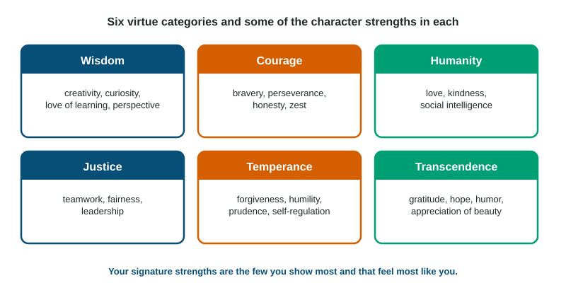

Positive Psychology
Positive psychology scientifically studies what helps people thrive.
Part 1 · Hook
Why this matters
Part 2 · Prerequisite check
Quick check before you start
1. After losing her job, a woman talks with friends and goes for runs to manage her feelings. Which coping strategy is this?
- Emotion-focused coping
- Problem-focused coping
- Fight-flight-freeze
- Displacement
Show the answer
Managing feelings rather than changing the stressor is emotion-focused coping.
- Correct: Emotion-focused coping:
- Problem-focused coping:
- Fight-flight-freeze:
- Displacement:
2. A theory says positive emotions widen thinking and, over time, build lasting resources. Which theory is this?
- Broaden-and-build theory
- Drive-reduction theory
- Arousal theory
- Trait theory
Show the answer
Broaden-and-build: positive emotions broaden attention and build skills and relationships.
- Correct: Broaden-and-build theory:
- Drive-reduction theory:
- Arousal theory:
- Trait theory:
Part 3 · See it
See it first

Part 4 · Step by step
How it works, step by step
- People notice and appreciate what is good (gratitude) and use their signature strengthsthey report somewhat higher subjective well-being, though effects are small
- People face adversity with support and coping resourcesmost show resilience, adapting and returning to their earlier functioning
- Some people struggle with a highly challenging event and make meaning of itthey report posttraumatic growth: new priorities, closer relationships or a sense of strength
Part 5 · Key ideas
Key ideas
- Positive psychology is the scientific study of well-being and of the strengths and conditions that help people and communities thrive.
- Subjective well-being is a person's own rating of life satisfaction plus the balance of pleasant and unpleasant feelings.
- Resilience is bouncing back after adversity, and it is common. Posttraumatic growth is positive change after a struggle with trauma; it can occur alongside distress.
- Gratitude and signature strengths are studied practices and traits. Strengths fall into six virtue categories: wisdom, courage, humanity, justice, temperance, transcendence.
Part 6 · Misconception
A common mistake
The wrong idea: Resilience and posttraumatic growth are the same thing.
What actually happens: Resilience is returning to your earlier level of functioning after adversity. Posttraumatic growth is positive change beyond that level, such as new priorities or closer relationships, and it often comes with real distress, not instead of it.
Part 7 · Check yourself
Check yourself
Exam-style questions. Anything you miss goes into your review queue.
1. In a survey, Ana rates her life satisfaction 9 out of 10 and reports feeling many more pleasant than unpleasant emotions. Which concept do these ratings measure?
- Subjective well-being
- Resilience
- Self-efficacy for daily tasks
- Eustress
Show the answer
Subjective well-being is self-reported happiness and life satisfaction.
- Correct: Subjective well-being: Right: a person's own judgment of life satisfaction plus the balance of positive and negative feelings.
- Resilience: Resilience is bouncing back from adversity; nothing here is about recovering from a hardship.
- Self-efficacy for daily tasks: Self-efficacy is belief in succeeding at a task, not satisfaction with life.
- Eustress: Eustress is positive stress, not a rating of life satisfaction.
2. After her family lost their home in a fire, Kiara felt shaken for weeks, then gradually returned to school, sports and friendships, functioning much as before. Which concept best describes her?
- Posttraumatic growth
- Resilience
- Learned helplessness
- Denial
Show the answer
Resilience: recovering and adapting well after adversity, which is common.
- Posttraumatic growth: Growth would mean positive change beyond her earlier level, such as new priorities; she returned to her earlier functioning.
- Correct: Resilience: Right: adapting well and bouncing back after adversity.
- Learned helplessness: Learned helplessness is giving up after repeated uncontrollable events; she recovered.
- Denial: Denial would be refusing to accept the loss; she was shaken and then adapted.
3. A year after a serious car accident, Dev says he now values his relationships more, feels stronger than he thought he was, and changed his career to something more meaningful. Which concept do these changes show?
- Resilience after trauma
- Reaction formation
- Eustress
- Posttraumatic growth
Show the answer
Posttraumatic growth: positive change, such as new priorities or closer relationships, after struggling with trauma.
- Resilience after trauma: Resilience is returning to the earlier level; Dev describes positive change beyond it.
- Reaction formation: Reaction formation is a defense mechanism showing the opposite of a hidden feeling.
- Eustress: Eustress is positive stress at the time; Dev describes lasting change after a trauma.
- Correct: Posttraumatic growth: Right: positive psychological change after struggling with a highly challenging event.
Figure
Six virtue categories
4. Sofia speaks up for a classmate who is being teased, even though it might make her unpopular. Under which virtue category in the figure does her strength belong?
- Wisdom
- Courage
- Temperance
- Transcendence
Show the answer
Bravery is a courage strength.
- Wisdom: Wisdom covers strengths of knowledge such as curiosity and perspective.
- Correct: Courage: Right: bravery, acting on what is right despite risk, is a strength of courage.
- Temperance: Temperance covers self-control strengths such as prudence and forgiveness.
- Transcendence: Transcendence covers strengths that connect us to something larger, such as gratitude and hope.
5. A team captain makes sure every player gets equal playing time and organizes the team well. Which virtue category in the figure do these strengths fall under?
- Humanity
- Wisdom
- Transcendence
- Justice
Show the answer
Fairness, leadership and teamwork are justice strengths.
- Humanity: Humanity covers close, one-on-one strengths such as love and kindness.
- Wisdom: Wisdom covers strengths such as curiosity and perspective.
- Transcendence: Transcendence covers strengths such as gratitude, hope and humor.
- Correct: Justice: Right: fairness and leadership are strengths of justice, which support healthy group life.
6. A grandfather forgives a relative who hurt him years ago and keeps his temper in check. Which virtue category best fits?
- Temperance
- Courage
- Justice
- Wisdom
Show the answer
Forgiveness and self-regulation belong to temperance.
- Correct: Temperance: Right: forgiveness and self-regulation are temperance strengths that protect against excess.
- Courage: Courage covers bravery and perseverance in the face of difficulty.
- Justice: Justice covers strengths of group life, such as fairness and teamwork.
- Wisdom: Wisdom covers strengths of knowledge and judgment such as curiosity.
7. Every night for two weeks, students write down three things that went well that day and why. Which positive psychology concept is this exercise designed to build?
- Gratitude
- Self-actualization
- Resilience
- Display rules
Show the answer
Gratitude practices ask people to notice and appreciate what is good.
- Correct: Gratitude: Right: noticing and appreciating good things in life.
- Self-actualization: Self-actualization is a humanistic idea about growing toward potential, not a daily writing practice.
- Resilience: Resilience is recovering from adversity; the exercise targets appreciation of good events.
- Display rules: Display rules are cultural norms for showing emotion.
Part 8 · Summary
Summary
Part 9 · Up next
What comes next
Part 10 · Connections